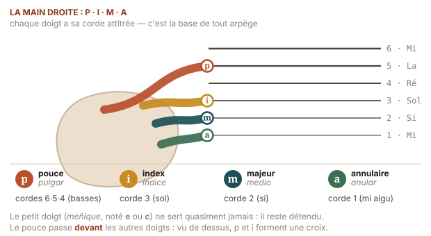
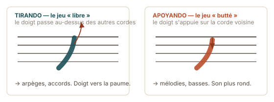

La technique de l'arpège
P·I·M·A : quatre doigts, une mécanique, mille couleurs.
Jusqu'ici, la main droite grattait. À partir de maintenant, elle joue. L'arpège est ce qui distingue le son de la guitare classique et, surtout, le son cubain : au lieu d'un accord plaqué, une pluie de notes qui se répondent. Et c'est une bonne nouvelle pour toi — l'arpège demande beaucoup moins de vitesse de main gauche que le grattage.
✳ Le mot
Arpège (de l'italien
arpeggio, « à la manière de la harpe », de arpa) —
jouer les notes d'un accord successivement plutôt que simultanément.
L'accord reste posé par la main gauche ; c'est la main droite qui l'égrène. Le mot
dit exactement ce qu'il faut entendre : on imite une harpe.
Son contraire est l'accord plaqué, où toutes les notes
sonnent en même temps ; et son cousin est le rasgueado
espagnol, où les doigts se déplient en éventail pour produire un grattage très rapide.
La main droite : nommer chaque doigt
La guitare classique utilise une notation venue de l'espagnol, universelle depuis le XIXe siècle. Elle apparaît sur toutes les partitions : retiens-la maintenant, une fois pour toutes.

| Lettre | Espagnol | Doigt | Cordes habituelles |
|---|---|---|---|
| p | pulgar | pouce | les basses : 6e, 5e, 4e |
| i | índice | index | 3e corde |
| m | medio | majeur | 2e corde |
| a | anular | annulaire | 1re corde |
L'auriculaire (meñique, noté ch ou e) ne sert pratiquement jamais : il est trop court et trop faible. Laisse-le libre et détendu, ni replié ni posé sur la table.
✦ Le sais-tu ?
Jusqu'au milieu du XIXe siècle, beaucoup de guitaristes appuyaient l'auriculaire droit sur la table d'harmonie pour stabiliser la main — on le voit sur les gravures d'époque. C'est Francisco Tárrega (1852–1909) qui imposa la main libre et suspendue : il montra que le point d'appui étouffait la table, donc le son, et qu'il bloquait l'articulation du poignet. Tárrega est aussi celui qui a fixé la position assise moderne et popularisé l'usage de l'ongle. À peu près tout ce que tu apprends dans cette section vient de lui — y compris Recuerdos de la Alhambra, qui est le plus célèbre arpège de l'histoire de l'instrument.
♪ Écoute · l'arpège porté à son extrême
Recuerdos de la Alhambra · Francisco Tárrega · 1899
Ce que tu entends comme une mélodie continue, presque comme un violon, n'est en réalité qu'une note répétée très vite par trois doigts à la suite (a – m – i) pendant que le pouce joue la basse : c'est la technique du trémolo. Tu n'y toucheras pas avant longtemps, mais écoute-la : elle te montre où mène le chemin qui commence aujourd'hui.
La position de la main droite
- L'avant-bras repose sur l'éclisse, à peu près à l'aplomb du chevalet. Le poignet est en avant de la table, sans la toucher.
- La main forme une voûte souple, comme si tu tenais une balle de tennis. Ni poing fermé, ni main à plat.
- Le pouce est en avant des autres doigts, décalé vers la tête de la guitare — jamais derrière ni au-dessus. Si le pouce est en arrière, il heurte l'index à chaque note.
- L'attaque vient de la phalange de la base (l'articulation avec la main), pas du bout du doigt. Le doigt ne se recroqueville pas : il balaie.
⚠ Piège classique
Le poignet cassé, c'est-à-dire plié vers le bas à angle marqué. C'est confortable pendant trois minutes et douloureux au bout de trois mois : c'est un facteur connu de tendinite. La vérification : en regardant ton bras de côté, l'avant-bras et le dos de la main doivent former une ligne presque droite, à peine incurvée. Si tu vois un angle net, remonte le poignet.
Les deux attaques : tirando et apoyando

✳ Le mot
Tirando (espagnol,
« en tirant » ; en français pincé, en anglais free
stroke) — le doigt pince la corde et se dégage vers la paume, sans
toucher la corde voisine. Son est plus léger, plus clair, et surtout : il laisse
toutes les autres cordes libres de continuer à vibrer. C'est l'attaque de
l'arpège, et donc celle que tu vas travailler.
Apoyando (espagnol,
« en appuyant » ; buté, rest stroke) — le doigt
traverse la corde et vient se poser sur la corde voisine plus grave. Son plus
rond, plus puissant, plus « chanté ». On le réserve aux mélodies et aux
gammes. Il étoufferait un arpège, puisque le doigt bloque une corde en arrivant.
◆ Le geste juste, en une image
En tirando, ne tire pas la corde vers l'extérieur — c'est l'erreur qui produit le claquement métallique. Pense plutôt : le doigt s'enfonce légèrement vers la table puis remonte, comme s'il traçait une petite virgule. La corde est déplacée parallèlement à la table, pas perpendiculairement. Le son devient immédiatement plus rond.
Le premier patron d'arpège : p–i–m–a
Pose Em (six cordes, rien ne peut mal se passer) et joue : pouce sur la 6e, index sur la 3e, majeur sur la 2e, annulaire sur la 1re. Puis recommence. Très lentement — quatre secondes par cycle au début.
p i m a p i m a
e|-----------------0---|---------------0---|
B|-------------0-------|-----------0-------|
G|---------0-----------|-------0-----------|
D|---------------------|-------------------|
A|---------------------|-------------------|
E|-0-------------------|-0-----------------|
Em Em
Patron n°1 — p i m a ascendant. Le pouce sur la basse de l'accord : 6e corde pour Em, E et G ; 5e pour Am, A et C ; 4e pour D et Dm.
◆ La règle de la basse
Le pouce ne joue pas n'importe quelle corde grave : il joue la fondamentale de l'accord, c'est-à-dire la note qui lui donne son nom. Pour Em c'est le Mi (6e corde), pour Am c'est le La (5e), pour D c'est le Ré (4e). Retiens cette correspondance : elle transforme n'importe quel patron d'arpège en accompagnement utilisable sur n'importe quelle grille.
Les six patrons du guide
Tous se jouent sur le même accord tenu. Change de patron sans changer d'accord, puis change d'accord sans changer de patron : c'est l'ordre d'apprentissage.
| N° | Patron | Notes / mesure | Caractère | Semaine |
|---|---|---|---|---|
| 1 | p i m a | 4 | montée simple, limpide | 3 |
| 2 | p a m i | 4 | descente, plus mélancolique | 3 |
| 3 | p i m a m i | 6 | vague : le patron de berceuse | 4 |
| 4 | p – i m a | 4 + silence | respiration, très boléro | 5 |
| 5 | p i a m i a | 6 | ondulation cubaine | 6 |
| 6 | p (im) a – ima | tresillo | le balancement du son | 7 |
Patron 3 — p i m a m i, sur Am
p i m a m i p i m a m i
e|-----------------0-----------|---------------0-----------|
B|-------------1-------1-------|-----------1-------1-------|
G|---------2---------------2---|-------2---------------2---|
D|-----------------------------|---------------------------|
A|-0---------------------------|-0-------------------------|
E|-----------------------------|---------------------------|
Six notes par mesure : on est en 6/8, la métrique qui donne au patron n°3 son balancement de barcarolle.
Les cinq minutes qui changent tout : l'indépendance des doigts
Le vrai obstacle de la main droite n'est pas la force, c'est l'indépendance : m et a partagent des tendons et veulent bouger ensemble. Trois exercices, deux minutes chacun, à faire n'importe où — y compris sans guitare, sur le bord d'une table.
◆ Le pouce seul
Pouce sur la 6e, 5e, 4e en boucle, lentement, pendant que i m a restent parfaitement immobiles au-dessus de leurs cordes. C'est plus dur qu'il n'y paraît.
◆ m et a
Alterne m et a sur la 1re corde, cinquante fois, en surveillant que l'autre ne bouge pas. C'est l'exercice le plus rentable de toute la main droite.
◆ La préparation
Pose les quatre doigts simultanément sur leurs quatre cordes avant de jouer, puis libère-les un par un. Ce « placement préalable » est le secret d'un arpège régulier.
⚠ Piège classique
Accélérer avant d'être régulier. Un arpège rapide et inégal sonne comme une erreur ; un arpège lent et parfaitement régulier sonne comme de la musique. L'oreille humaine pardonne tout sauf l'irrégularité. Enregistre-toi trente secondes avec ton téléphone : c'est brutal, et c'est le retour le plus utile que tu obtiendras cette semaine.
✦ Le sais-tu ?
Le mot arpeggio apparaît en Italie au XVIe siècle pour décrire une pratique alors considérée comme un remède technique : le clavecin et le luth ne peuvent pas tenir un son, alors on égrène les notes de l'accord pour que la sonorité dure plus longtemps. Ce qui était une ruse d'ingénieur est devenu un langage : le prélude en do majeur de Bach, la Sonate au clair de lune de Beethoven, la Cathédrale de Barrios et le boléro cubain reposent tous, sans exception, sur la même idée de départ. Une contrainte technique retournée en beauté — c'est arrivé souvent en musique.
★ Petite victoire
Joue le patron n°1 sur Em pendant deux minutes sans interruption, les yeux fermés, très lentement. Écoute les cordes se superposer. C'est la première fois que ta guitare produit quelque chose qui ressemble vraiment à de la guitare classique — et tu l'as obtenu avec un accord à deux doigts.
⚑ Défi · l'arpège de conversation
Mets le patron n°1 en boucle sur Am et parle à quelqu'un en même temps — ou compte à voix haute jusqu'à cinquante. Si l'arpège survit à la conversation, il est automatisé : tu peux passer au patron suivant. Sinon, ce n'est pas grave, c'est simplement qu'il faut encore quelques jours.